第十二章 CAN
12.1 CAN总线基本概念¶
12.1.1 CAN总线简介¶
- CAN总线（Controller Area Network Bus）控制器局域网总线
- CAN总线是由BOSCH公司开发的一种简洁易用、传输速度快、易扩展、可靠性高的串行通信总线，广泛应用于汽车、嵌入式、工业控制等领域
- CAN总线特征：
- 两根通信线（CAN_H、CAN_L），线路少 差分信号通信，抗干扰能力强
- 高速CAN（ISO11898）：125k~1Mbps, <40m
- 低速CAN（ISO11519）：10k~125kbps, <1km
- 异步，无需时钟线，通信速率由设备各自约定
- 半双工，可挂载多设备，多设备同时发送数据时通过仲裁判断先后顺序
- 11位/29位报文ID，用于区分消息功能，同时决定优先级
- 可配置1~8字节的有效载荷
- 可实现广播式和请求式两种传输方式
- 应答、CRC校验、位填充、位同步、错误处理等特性
各大主流通信协议对比：
| 名称 | 引脚 | 双工 | 时钟 | 电平 | 设备 | 应用场景 |
|---|---|---|---|---|---|---|
| UART | TX、RX | 全双工 | 异步 | 单端 | 点对点 | 两个设备互相通信 |
| I2C | SCL、SDA | 半双工 | 同步 | 单端 | 多设备 | 一个主控外挂多个模块 |
| SPI | SCK、MOSI、MISO、SS | 全双工 | 同步 | 单端 | 多设备 | 一个主控外挂多个模块（高速） |
| CAN | CAN_H、CAN_L | 半双工 | 异步 | 差分 | 多设备 | 多个主控互相通信 |
12.1.2 CAN硬件电路¶
- 每个设备通过CAN收发器挂载在CAN总线网络上
- CAN控制器引出的TX和RX与CAN收发器相连，CAN收发器引出的CAN_H和CAN_L分别与总线的CAN_H和CAN_L相连
- 高速CAN使用闭环网络，CAN_H和CAN_L两端添加120Ω的终端电阻
- 低速CAN使用开环网络，CAN_H和CAN_L其中一端添加2.2kΩ的终端电阻
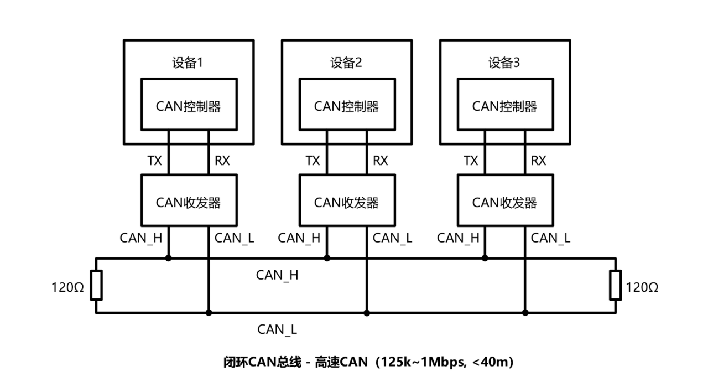
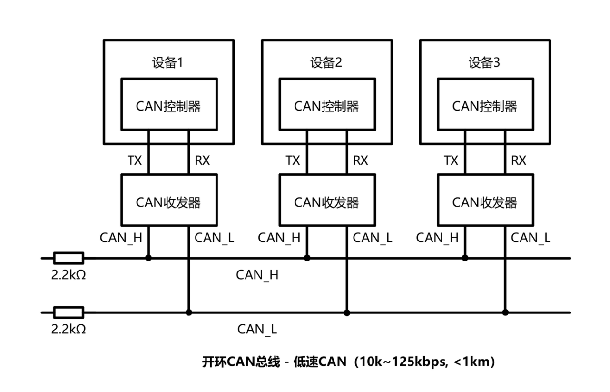
12.1.3 CAN的电平标准¶
- CAN总线采用差分信号，即两线电压差（V_H - V_L）传输数据位
-
高速CAN规定：
- 电压差为0V时表示逻辑1（隐性电平）
- 电压差为2V时表示逻辑0（显性电平）
- 低速CAN规定：
- 电压差为-1.5V时表示逻辑1（隐性电平）
- 电压差为3V时表示逻辑0（显性电平）
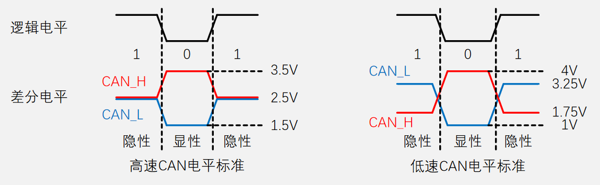
12.1.4 高低速CAN不同点¶
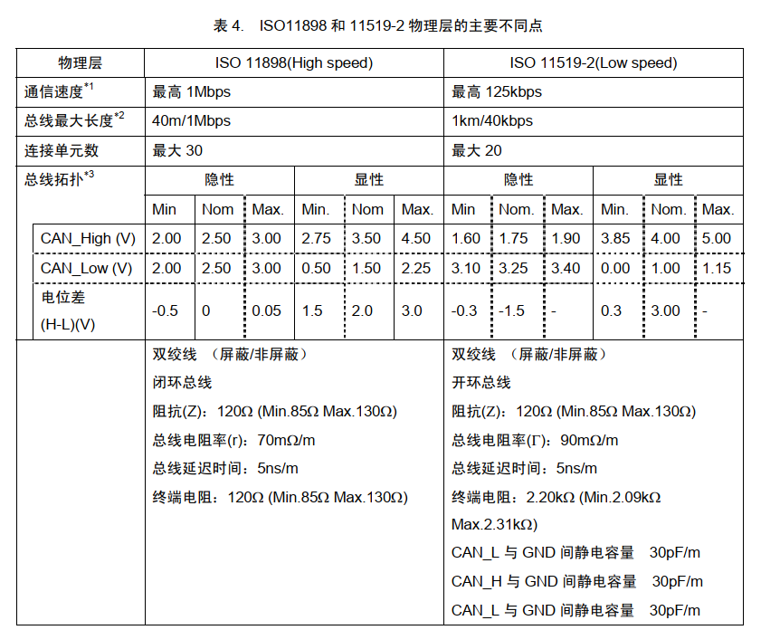
12.2 CAN总线协议¶
12.2.1 帧格式¶
CAN总线定义了 5 种帧格式：
| 帧类型 | 用途 |
|---|---|
| 数据帧 | 发送设备主动发送数据（广播式） |
| 遥控帧 | 接收设备主动请求数据（请求式） |
| 错误帧 | 某个设备检测出错误时向其他设备通知错误 |
| 过载帧 | 接收设备通知其尚未做好接收准备 |
| 帧间隔 | 用于将数据帧及遥控帧与前面的帧分离开 |
Danger
其中 数据帧 最为重要且复杂，遥控帧与数据帧类似，其他了解即可。
- 数据帧
数据帧的构成如下图，其中灰色部分(D)表示 Dominant：显性电平 0 ；白色部分(R)表示 Recessive：隐性电平 1 ；紫色部分为发送数据，电平高低按实际数据；数字表示该字段的数据位数(bit)。
扩展格式是对标准格式的升级，用于解决ID位数不够用的情况，然标准格式的优先级要高于扩展格式。
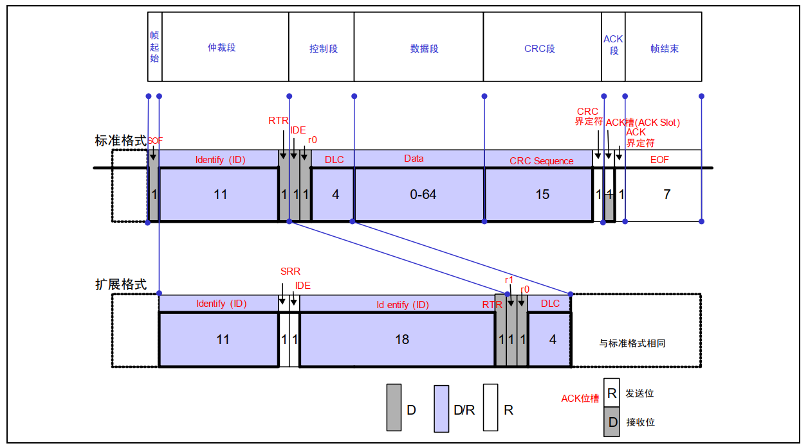
上图中的一些重要名称含义如下：
- SOF（Start of Frame）：帧起始，表示后面一段波形为传输的数据位。
- ID（Identify）：标识符，区分功能，同时决定优先级。
- RTR（Remote Transmission Request ）：远程请求位，区分数据帧和遥控帧。
- IDE（Identifier Extension）：扩展标志位，区分标准格式和扩展格式。
- SRR（Substitute Remote Request）：替代RTR，协议升级时留下的无意义位。
- r0/r1（Reserve）：保留位，为后续协议升级留下空间。
- DLC（Data Length Code）：数据长度，指示数据段有几个字节。
- Data：数据段的1~8个字节有效数据。
- CRC（Cyclic Redundancy Check）：循环冗余校验，校验数据是否正确。
- ACK（Acknowledgement）：应答位，判断数据有没有被接收方接收。
- CRC/ACK界定符：为应答位前后发送方和接收方释放总线留下时间。
- EOF（End of Frame ）：帧结束，表示数据位已经传输完毕。
- 遥控帧
遥控帧用于请求式，其中与数据帧不同在于 RTR 为 隐性电平 1 ，接收方收到后以遥控帧格式解析，然后发送相同数据ID的数据帧。当遥控帧请求和数据帧反馈同时发生时，数据帧优先级更高。

- 错误帧
总线上所有设备都会监督总线的数据，一旦发现 “位错误” 或 “填充错误” 或 “CRC错误” 或 “格式错误” 或 “应答错误” ，这些设备便会发出错误帧来破坏数据，同时终止当前的发送设备。
错误标志包括主动错误标志和被动错误标志两种，最后还有错误界定符：
- 主动错误标志： 6 个位的显性位。
- 被动错误标志： 6 个位的隐性位。
- 错误标志后还有 6 位用于延时。
- 错误界定符由 8 个位的隐性位构成。
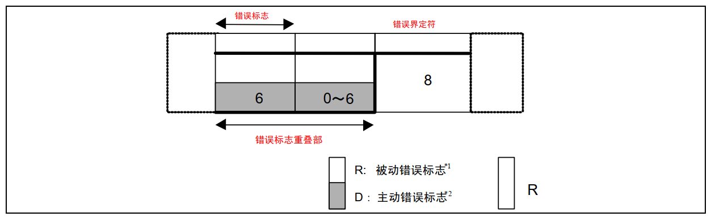
- 过载帧
当接收方收到大量数据而无法处理时，其可以发出过载帧，延缓发送方的数据发送，以平衡总线负载，避免数据丢失。
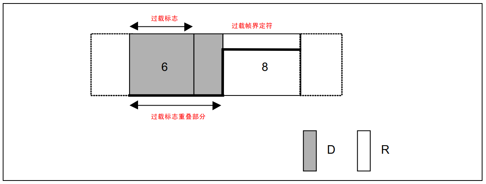
- 帧间隔
帧间隔是用于分隔数据帧和遥控帧的帧。数据帧和遥控帧可通过插入帧间隔将本帧与前面的任何帧（数据帧、遥控帧、错误帧、过载帧）分开。
过载帧和错误帧前不能插入帧间隔。
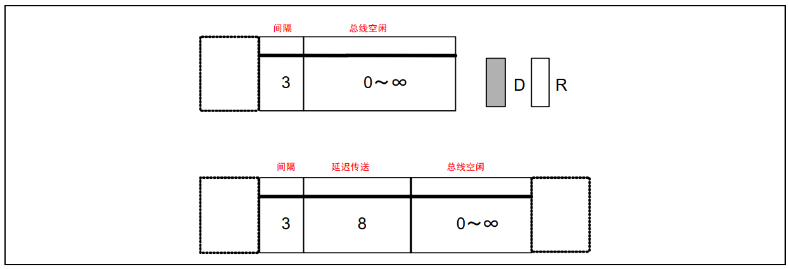
12.2.2 位填充¶
位填充规则 ：发送方每发送5个相同电平后，自动追加一个相反电平的填充位，接收方会自动移除填充位，恢复原始数据。
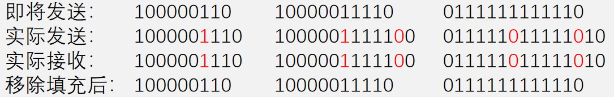
位填充的作用 ：
- 增加波形的定时信息，利于接收方执行 再同步 ，防止波形长时间无变化，导致接收方不能精确掌握数据采样时机。
- 将正常数据流与“错误帧”和“过载帧”区分开，标志“错误帧”和“过载帧”的特异性。
- 保持CAN总线在发送正常数据流时的活跃状态，防止被误认为总线空闲。
12.2.3 位时序¶
关于CAN总线的位时序如下，而理想情况： 接收方能依次采样到发送方发出的每个数据位，且采样点位于数据位中心附近 ，这也是位同步要做的事情。
- CAN总线没有时钟线，总线上的所有设备通过约定波特率的方式确定每一个数据位的时长。
- 发送方以约定的位时长每隔固定时间输出一个数据位。
- 接收方以约定的位时长每隔固定时间采样总线的电平，输入一个数据位。
接收方数据采样遇到的问题 ：
- 接收方以约定的位时长进行采样，但是采样点没有对齐数据位中心附近。
- 接收方刚开始采样正确，但是时钟有误差，随着误差积累，采样点逐渐偏离。
为了灵活调整每个采样点的位置，使采样点对齐数据位中心附近，CAN总线对每一个数据位的时长进行了更细的划分。
- 同步段（ SS: Synchronization Segment）
- 传播时间段（ PTS: Propagation Time Segment）
- 相位缓冲段 1（PBS1: Phase Buffer Segment 1）
- 相位缓冲段 2（PBS1: Phase Buffer Segment 2）
- 在同步补偿宽度（SJW: reSynchronization Jump Width）
一个数据位的构成如下图：
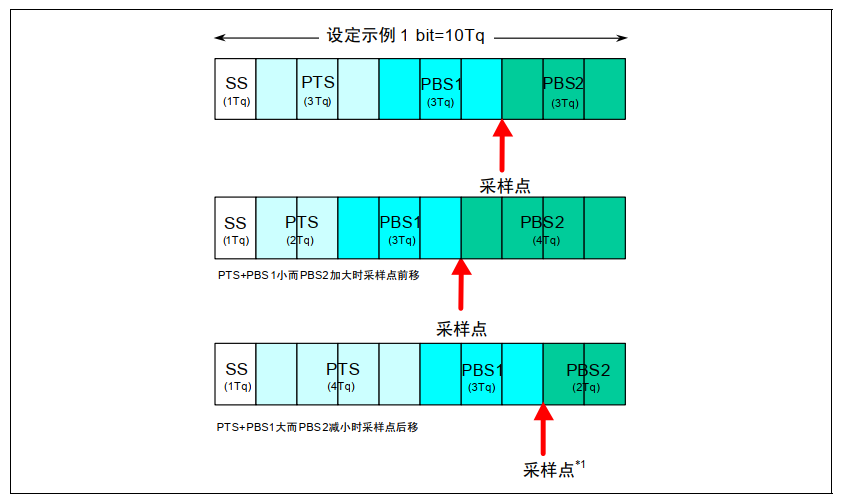
| 段名称（缩写） | 作用描述 | Tq数范围 |
|---|---|---|
| 同步段（SS） | 实现总线单元时序同步，调整收发同步性。信号边沿应优先出现在此段。 | 固定 1Tq |
| 传播时间段（PTS） | 补偿网络物理延迟（发送延迟+传播延迟+接收延迟），总延迟时间为各延迟和的两倍。 | 1~8Tq |
| 相位缓冲段1（PBS1） | 吸收各单元独立时钟的累积微小误差。 | 1~8Tq |
| 相位缓冲段2（PBS2） | 通过调整SJW（再同步补偿宽度）进一步吸收时钟误差，SJW增大会降低通信速度。 | 2~8Tq |
| 再同步补偿宽度（SJW） | 补偿时钟频率偏差和传输延迟导致的最大同步误差值。 | 1~4Tq（可配置） |
12.2.4 硬件同步¶
前面讲过，CAN总线把一位数据分成 5 段，相当于每个设备都有一个位的时序计时周期。
- 当总线上有一个设备要发数据，那么它将再 SS 段发送 SOF 帧起始，即一个逻辑电平下降沿。
- 而正常情况下，此时所以接收方应都处于 SS 段。
- 异常情况下，接收方会将自己的位时序计时周期拨到 SS 段的位置，这就是 硬件同步 。
需要注意：
- 硬同步只在帧的第一个下降沿（SOF下降沿）有效。
- 经过硬同步后，若发送方和接收方的时钟没有误差，则后续所有数据位的采样点必然都会对齐数据位中心附近。
- 若后续再出现误差，则需要使用后面的 再同步 。
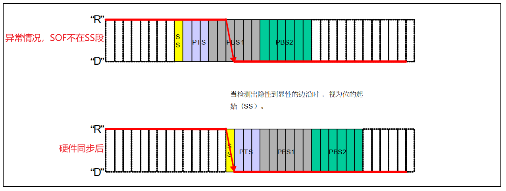
12.2.5 再同步¶
若发送方或接收方的时钟有误差，随着误差积累，数据位边沿逐渐偏离 SS 段，则此时接收方根据再同步补偿宽度值（SJW）通过加长 PBS1 段，或缩短 PBS2 段，以调整同步。
如下图：
- 第一中情况（上半部分）
- 接收方时序快于发送方，增加 PBS1 段 2 个Tq，以确保下一位数据时时序同步。
- 第二种情况（下半部分）
- 接收方时序慢于发送方，增少 PBS2 段 2 个Tq，以确保下一位数据时时序同步。
- 注意
- SJW = 2，表示最多增加或减少 2 个Tq，具体减少或增加几个Tq需要根据误差和SJW值分析。
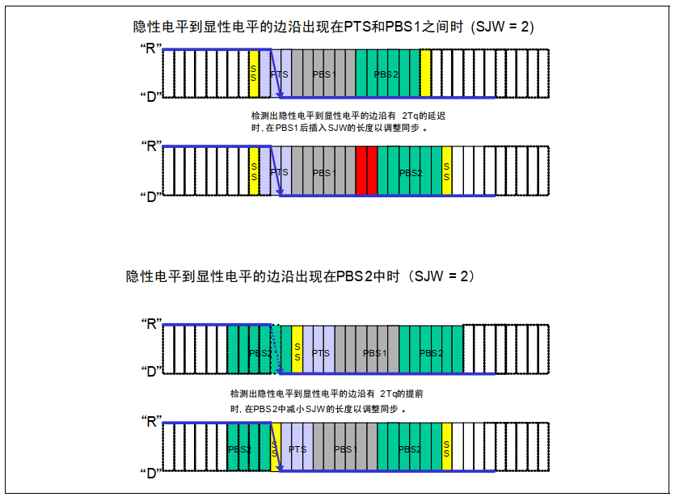
12.2.6 仲裁¶
当多个设备同时操作总线时，会出现冲突情况，主要分为两种：
- 在一个设备A发送数据帧/遥控帧过程中，另一个设备B也想要发送数据帧/遥控帧。(①使用先占先得)
- 两个设备同时准备发送数据帧/遥控帧。(②非破坏性仲裁)
①使用先占先得
⭐核心规则：任何设备检测到连续11个隐性电平，即认为总线空闲，只有在总线空闲时，设备才能发送数据帧/遥控帧。
有此规则后便会解决所以非同时操作总线的情况：
- 若当前已经有设备正在操作总线发送数据帧/遥控帧，则其他任何设备不能再同时发送数据帧/遥控帧（可以发送错误帧/过载帧破坏当前数据）。
- 同一时间只会有一个设备可以发送数据帧/遥控帧。
②非破坏性仲裁
⭐核心规则：若多个设备的发送需求同时到来或因等待而同时到来，则CAN总线协议会根据ID号（仲裁段）进行非破坏性仲裁，ID号小的（优先级高）取到总线控制权，ID号大的（优先级低）仲裁失利后将转入接收状态，等待下一次总线空闲时再尝试发送。
实现非破坏性仲裁需要的两个要求：
- 线与特性 ：总线上任何一个设备发送显性电平0时，总线就会呈现显性电平0状态，只有当所有设备都发送隐性电平1时，总线才呈现隐性电平1状态。
- 回读机制 ：每个设备发出一个数据位后，都会读回总线当前的电平状态，以确认自己发出的电平是否被真实地发送出去了。
非破坏性仲裁过程：
- 总线时所有要发送数据帧/遥控帧的设备( 同时发送 )发送一位数据并回读总线电平。
- 在仲裁段一定会逐渐出现回读的总线电平与自己发送的电平不一致的设备，这些设备都会 “意识到” 有其他设备使用总线，因此仲裁失利推出发送，转为接收状态。
Danger
将非破坏性仲裁过程普遍化，就会得到 ID号小的设备优先级高 的结论。
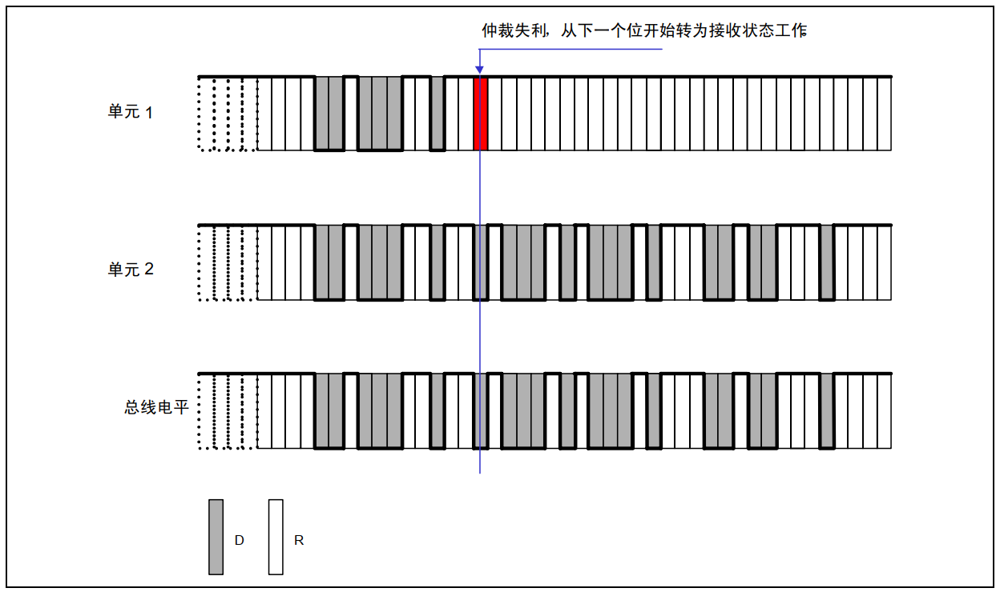
数据帧和遥控帧ID号一样时，数据帧的优先级高于遥控帧（看完图就明白了）。
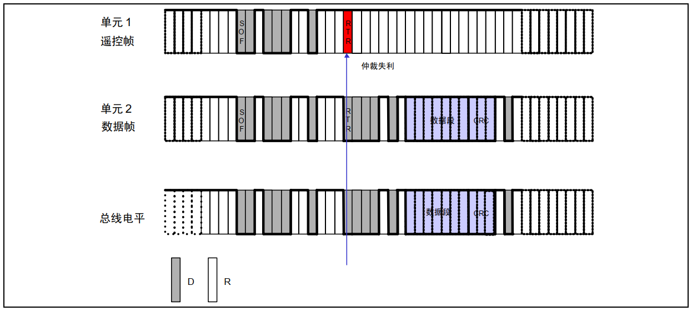
标准格式11位ID号和扩展格式29位ID号的高11位一样时，标准格式的优先级高于扩展格式（SRR必须始终为1，以保证此要求）

12.2.7 错误处理¶
错误类型
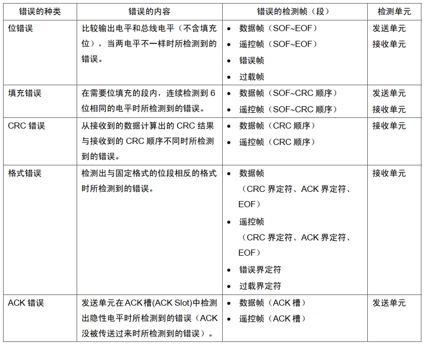
错误状态
- 主动错误状态的设备正常参与通信并在检测到错误时发出 主动错误帧 。
- 被动错误状态的设备正常参与通信但检测到错误时只能发出 被动错误帧 。
- 总线关闭状态的设备不能参与通信。
- 每个设备内部管理一个 TEC 和 REC ，根据 TEC 和 REC 的值确定自己的状态。
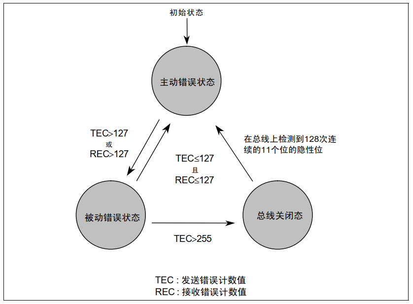
错误计数器

12.3 CAN总线外设¶
12.3.1 CAN外设简介¶
- STM32内置bxCAN外设（CAN控制器），支持CAN2.0A和2.0B，可以自动发送CAN报文和按照过滤器自动接收指定CAN报文，程序只需处理报文数据而无需关注总线的电平细节
- 波特率最高可达1兆位/秒
- 3个可配置优先级的发送邮箱
- 2个3级深度的接收FIFO
- 14个过滤器组（互联型28个）
- 时间触发通信、自动离线恢复、自动唤醒、禁止自动重传、接收FIFO溢出处理方式可配置、发送优先级可配置、双CAN模式
STM32F103C8T6 CAN资源：CAN1
STM32芯片内部仅集成了 CAN控制器 ，但我们仍然需要外接一个 CAN收发器 将逻辑电平转化为CAN需要的差分信号。
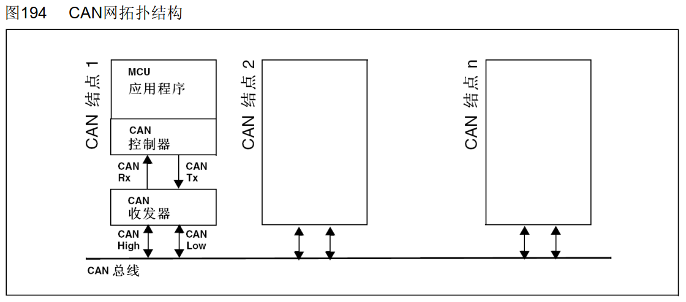
12.3.2 CAN框图¶
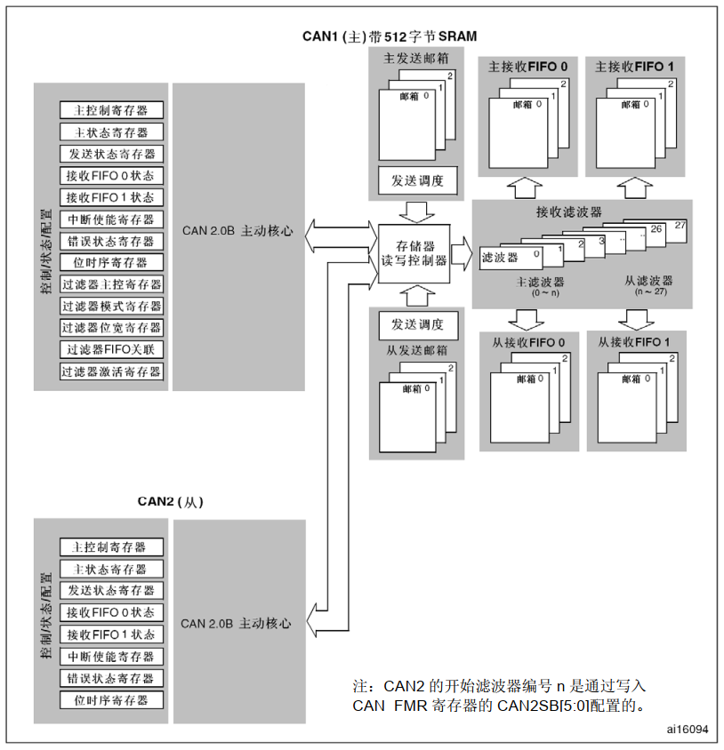
12.3.3 CAN基本结构¶
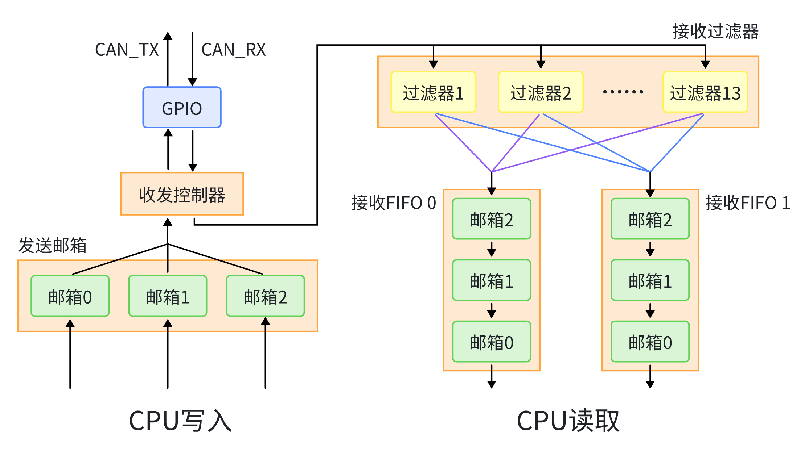
- 发送邮箱
- 可以配置 先占先行 或 报文ID小的先行 。
- 接收过滤器
- 用于过滤报文ID。
- 接收FIFO
- 两个FIFO没有优先级区别，可自行分配。
- 过滤后的报文ID存储在邮箱 0、1、2 这样的顺序，CPU处理邮箱 0 后，其余报文ID前移一位(和现实生活排队一样)。
- 当邮箱满了以后，来了新的报文ID，可以配置 舍弃新ID 或 舍弃末尾(邮箱2)ID 。